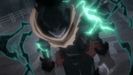
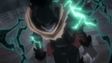

Dragon Ball

Dragon Ball is just that Guy. It is THE anime. This anime needs no introduction, it is the most popular anime of all time, and for good reason. Goku is one of the most recognizable characters in the world, for both non anime fans and anime fans alike. The fights in this series, the story, comedy moments, and the characters are all so iconic. This anime shaped a lot of modern shounen and im glad it is the golden standard The anime follows the adventures of Goku, a Saiyan warrior, as he trains in martial arts and explores the world in search of the seven orbs known as Dragon Balls, which summon a wish-granting dragon when gathered. Sounds normal right? WRONG! This anime is anything but normal, it is a wild ride from start to finish. The fact that this series is still alive today is a testament to its greatness, and it is still going strong. From comics to games to merchandise, dragon ball is no longer just an anime, its legit just an entire movement. Nothing will ever beat it's popularity, and I dont think anything ever will come close.


 
